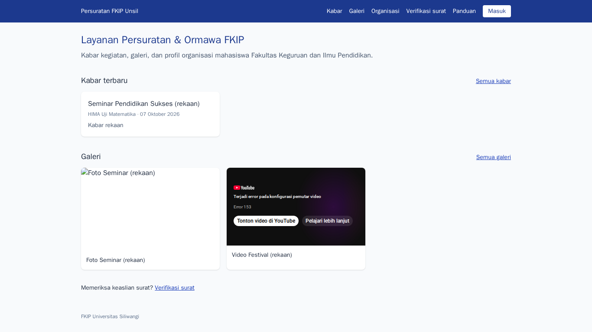
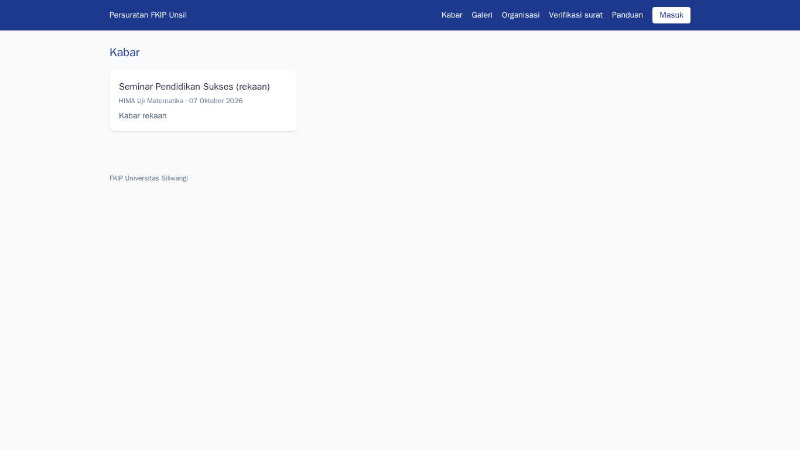
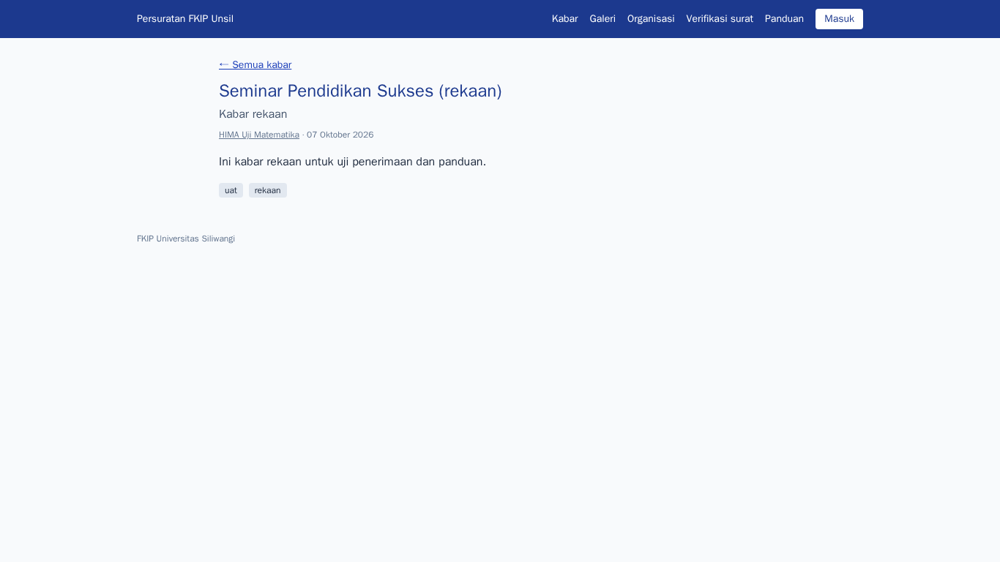
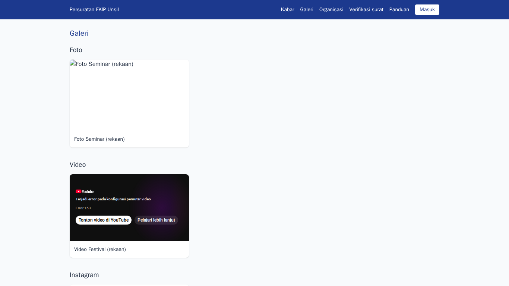
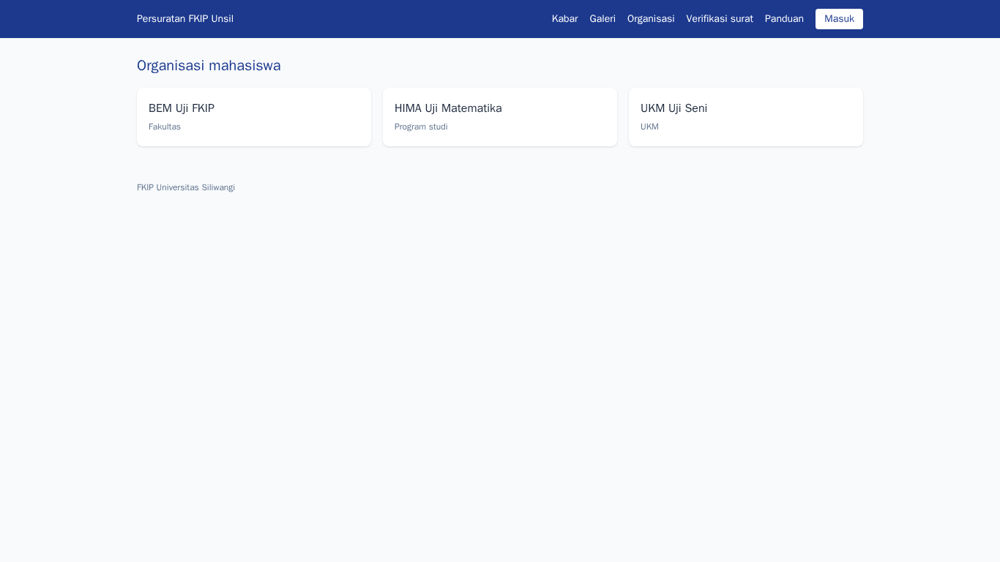
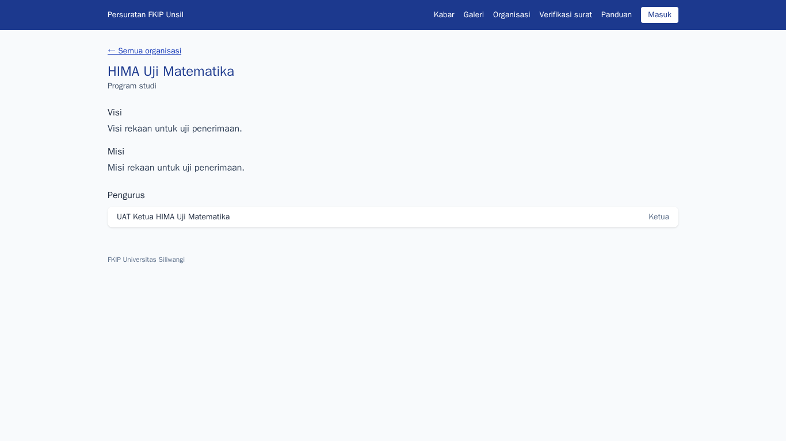
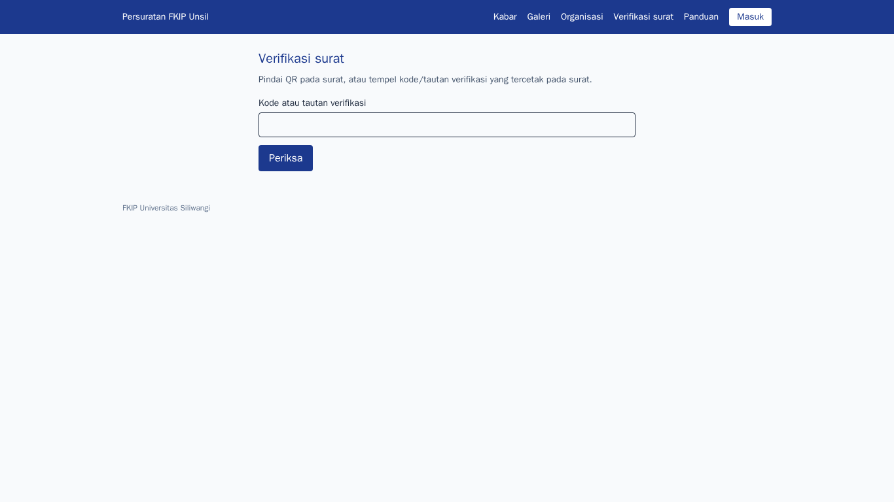

Pengunjung (publik)
Tujuan
Melihat kabar kegiatan ormawa, galeri, profil organisasi, dan memeriksa keaslian surat bertanda QR tanpa perlu akun.
Cara masuk
Tidak perlu masuk. Buka alamat aplikasi; halaman publik tersedia untuk semua orang.
Langkah-langkah
- Beranda
Beranda menampilkan kabar terbaru dan cuplikan galeri. Menu atas memuat Kabar, Galeri, Organisasi, dan Verifikasi surat.
Langkah 1 — Beranda - Daftar kabar
Hanya kabar yang sudah disetujui admin yang tampil. Gunakan tombol halaman di bawah daftar untuk kabar sebelumnya.
Langkah 2 — Daftar kabar - Membaca kabar
Klik judul kabar untuk membaca isi lengkap, tag, dan organisasi penulisnya.
Langkah 3 — Membaca kabar - Galeri
Foto, video YouTube, dan tautan Instagram kegiatan. Video diputar tanpa pelacak; Instagram dibuka di tab baru.
Langkah 4 — Galeri - Daftar organisasi
Organisasi mahasiswa FKIP beserta tingkatnya.
Langkah 5 — Daftar organisasi - Profil organisasi
Visi, misi, dan nama serta jabatan pengurus aktif. Nomor induk, telepon, dan surel pribadi tidak pernah ditampilkan.
Langkah 6 — Profil organisasi - Memeriksa keaslian surat
Pindai kode QR pada surat, atau tempel kode/tautan verifikasi pada kolom ini lalu Periksa. Halaman hasil menampilkan nomor, tanggal, penanda tangan, status, dan sidik (hash) dokumen.
Langkah 7 — Memeriksa keaslian surat
Tanya jawab
Mengapa surat saya tidak ditemukan?
Surat yang belum terbit atau masih draf tidak dapat diverifikasi; kode QR tercetak hanya pada naskah yang sudah ditandatangani.
Apakah isi surat tampil?
Tidak. Verifikasi hanya menampilkan data identitas surat, bukan isi atau lampirannya.